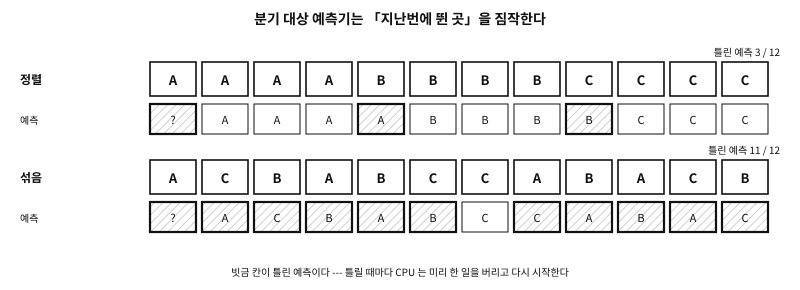

73 간접 호출의 비용 — 재고, 줄이고, 지킨다
먼저 알아야 할 것
돌아보기
표를 거치는 호출은 직접 호출보다 얼마나 비싼가? 「가상 호출은 느리다」와 「요즘 CPU 에서 간접 호출은 공짜다」 가운데 어느 쪽이 맞는가?
답. 둘 다 어떤 조건에서는 맞다. 이 기계에서 같은 종류가 이어지면 표를 거치는 호출은 직접 호출과 거의 같았고, 종류가 섞이면 네다섯 배가 되었다. 차이를 만든 것은 표가 아니라 CPU 가 다음에 뛸 곳을 맞히느냐(분기 예측)였다. 이 장은 그 조건을 하나씩 갈라 재고, 비용을 줄이는 법과 보안 장치가 더하는 비용을 본다.
이 장의 필요성과 맥락
switch 로 바꿨는데 더 느려지거나, 보안 옵션 하나를 켰더니 자주 도는 반복문이 몇 배로 느려진다. 잰 수와 그 수가 나온 조건을 함께 알아야 표를 쓸 자리와 피할 자리를 고를 수 있다.이 장이 끝나면
이 장에서 답할 질문
- 그러면 표 대신
switch를 쓰면 빨라진다는 말은 틀린 것인가?
73.1 무엇을 어떻게 재는가#
- 같은 일, 다른 고르기. 종류는 여덟 가지이고 종류마다 함수가 따로 있다. 함수의 몸은 곱셈 하나와 덧셈 하나로 일부러 작게 했다. 재려는 것은 일이 아니라 함수를 고르는 비용이다.
- 인라인 금지. 모든 종류의 함수에
[[gnu::noinline]]을 붙였다. 그러지 않으면switch쪽만 함수의 몸이 호출 자리에 펼쳐지고(인라인) 여러 객체를 한 명령으로 처리하는 코드(벡터화)까지 되어, 고르는 비용이 아니라 벡터화를 재게 된다. 인라인을 허락한 판은 따로 한 줄로 둔다. - 메모리는 같게, 순서만 다르게. 객체 65,536개를 한 배열에 놓고 늘 앞에서부터 걷는다. 「정렬」(출력의
sorted)은 같은 종류가 이어지게 놓은 것이고, 「섞음」(출력의mixed)은 같은 객체들의 순서만 무작위로 뒤섞은 것이다. 메모리를 읽는 순서는 같으므로 두 열의 차이는 분기 예측에서 온다. - 기준. 「종류 하나, 직접 호출」의 시간을 1 로 놓는다. 모든 칸은 그 배수다.
- 검산. 모든 방법이 같은 합을 내는지 마지막 줄에서 확인한다 — 컴파일러가 일을 지워 버리면 합이 어긋난다(75장의 측정과 같은 규율). 종류가 하나일 때는 정렬과 섞음이 같은 순서이므로 두 열이 같아야 한다.
출력의 머리 두 줄에서 kinds 는 종류의 수(1, 2, 8)이고 order 는 순서다. 줄마다 함수를 고르는 방법이 하나씩이고, 모두 열한 가지다.
| 출력의 줄 | 하는 일 | 다루는 절 |
|---|---|---|
grouped by kind, direct | 종류마다 색인 목록을 만들고, 목록마다 그 종류의 함수를 직접 부른다 | 둘째, 모은다 |
switch | 종류 번호로 switch 하고, 갈래마다 함수를 부른다 | 셋째, 고르는 모양 |
binary branches | 종류 번호를 비교 세 번으로 가른다. 표 없음 | 셋째, 고르는 모양 |
static const table | static const 표를 거쳐 부른다 | 첫째, 비용은 예측이다 |
table built at run time | 실행 때 malloc 한 메모리에 지은 표를 거쳐 부른다 | 첫째, 비용은 예측이다 |
fat pointer | 뚱뚱한 포인터의 표 쪽을 거쳐 부른다 | 첫째, 비용은 예측이다 |
selector, no cache | 셀렉터로 메서드 목록을 훑는다 | 인라인 캐시 |
selector, class cache | 셀렉터로 찾되 클래스별 캐시를 먼저 본다 | 인라인 캐시 |
selector, inline cache | 호출 자리에 「지난번 클래스 → 함수」 한 칸을 둔다 | 인라인 캐시 |
selector, 4-way PIC | 호출 자리에 그런 칸 넷을 둔다 | 인라인 캐시 |
switch, inlining allowed | switch 와 같되 함수의 몸을 펼쳐도 된다 | 셋째, 고르는 모양 |
표 73.1 — 측정 출력의 열한 줄
examples/dynamic-vtables/bench/ways.c
/* 함수를 고르는 길들 --- harness.c 가 잰다.
- 종류마다 함수가 따로 있고(상수가 달라 합쳐지지 않는다), 어느 것도 인라인하지
못한다: 재는 것은 일이 아니라 *고르기*다.
- 하나의 예외는 마지막 길이다. 컴파일러가 인라인하게 둔다. */
#include "bench.h"
#define KIND(k, c) \
[[gnu::noinline]] static uint64_t f##k(const struct obj *o) \
{ return o->x * (c) + (k); } \
static inline uint64_t g##k(const struct obj *o) { return o->x * (c) + (k); }
KIND(0, 3) KIND(1, 5) KIND(2, 7) KIND(3, 11)
KIND(4, 13) KIND(5, 17) KIND(6, 19) KIND(7, 23)
[[gnu::noinline]] uint64_t other(const struct obj *o) { return o->x; }
const method fs[KMAX] = { f0, f1, f2, f3, f4, f5, f6, f7 };
const struct ops static_ops[KMAX] = {
{ f0, other }, { f1, other }, { f2, other }, { f3, other },
{ f4, other }, { f5, other }, { f6, other }, { f7, other },
};
#define EACH for (uint32_t r = 0; r < REPS; r++) for (uint32_t i = 0; i < N; i++)
uint64_t m_direct(void) /* 기준: 종류 하나, 직접 호출 */
{ uint64_t s = 0; EACH s += f0(&arena[i]); return s; }
uint64_t m_grouped(void) /* 종류별로 모아(종류마다 색인 목록) 직접 호출 */
{
uint64_t s = 0;
for (uint32_t r = 0; r < REPS; r++)
for (uint32_t k = 0; k < kinds; k++) {
const uint32_t *ix = by_kind[k];
switch (k) {
#define GROUP(j) \
case j: for (uint32_t i = 0; i < count[j]; i++) s += f##j(&arena[ix[i]]); break;
GROUP(0) GROUP(1) GROUP(2) GROUP(3) GROUP(4) GROUP(5) GROUP(6) GROUP(7)
}
}
return s;
}
uint64_t m_switch(void) /* 종류 번호로 switch */
{
uint64_t s = 0;
EACH {
const struct obj *o = &arena[i];
switch (o->kind) {
case 0: s += f0(o); break; case 1: s += f1(o); break;
case 2: s += f2(o); break; case 3: s += f3(o); break;
case 4: s += f4(o); break; case 5: s += f5(o); break;
case 6: s += f6(o); break; case 7: s += f7(o); break;
}
}
return s;
}
uint64_t m_binary(void) /* 종류 번호로 이진 분기, 표 없음 */
{
uint64_t s = 0;
EACH {
const struct obj *o = &arena[i];
uint32_t k = o->kind;
if (k < 4) s += k < 2 ? (k < 1 ? f0(o) : f1(o)) : (k < 3 ? f2(o) : f3(o));
else s += k < 6 ? (k < 5 ? f4(o) : f5(o)) : (k < 7 ? f6(o) : f7(o));
}
return s;
}
uint64_t m_static(void) /* static const 표 */
{ uint64_t s = 0; EACH s += arena[i].sops->apply(&arena[i]); return s; }
uint64_t m_dynamic(void) /* 실행 때 지은 표 */
{ uint64_t s = 0; EACH s += arena[i].dops->apply(&arena[i]); return s; }
uint64_t m_fat(void) /* 뚱뚱한 포인터 */
{ uint64_t s = 0; EACH s += fats[i].ops->apply(fats[i].data); return s; }
/* ---- 셀렉터로: Objective-C 의 길, 캐시가 있을 때와 없을 때 ---- */
/* 목록을 훑고, 없으면 부모의 목록을 */
static method lookup_slow(const struct klass *c, uint32_t sel)
{
for (; c; c = c->parent)
for (uint32_t m = 0; m < c->n; m++)
if (c->methods[m].sel == sel) return c->methods[m].fn;
return nullptr;
}
/* 클래스별 캐시를 먼저 */
static method lookup_cached(struct klass *c, uint32_t sel)
{
struct cache_entry *e = &c->cache[sel & 15];
if (e->sel == sel) return e->fn;
method m = lookup_slow(c, sel);
*e = (struct cache_entry){ sel, m };
return m;
}
uint64_t m_sel_slow(void) /* 셀렉터, 캐시 없음: 목록을 끝까지 훑는다 */
{ uint64_t s = 0; EACH s += lookup_slow(arena[i].cls, SEL_APPLY)(&arena[i]); return s; }
uint64_t m_sel_cache(void) /* 셀렉터, 클래스별 캐시 */
{ uint64_t s = 0; EACH s += lookup_cached(arena[i].cls, SEL_APPLY)(&arena[i]); return s; }
uint64_t m_sel_ic(void) /* 셀렉터, 호출 자리의 한 칸 인라인 캐시 */
{
uint64_t s = 0;
struct { const struct klass *cls; method fn; } ic = {};
EACH {
struct klass *c = arena[i].cls;
if (c != ic.cls) { ic.cls = c; ic.fn = lookup_slow(c, SEL_APPLY); } /* 놓침 */
s += ic.fn(&arena[i]);
}
return s;
}
uint64_t m_sel_pic(void) /* 셀렉터, 네 칸 다형 인라인 캐시 */
{
uint64_t s = 0;
struct { const struct klass *cls; method fn; } pic[4] = {};
uint32_t next = 0;
EACH {
struct klass *c = arena[i].cls;
method m;
if (pic[0].cls == c) m = pic[0].fn;
else if (pic[1].cls == c) m = pic[1].fn;
else if (pic[2].cls == c) m = pic[2].fn;
else if (pic[3].cls == c) m = pic[3].fn;
else { /* 놓침: 찾고, 한 칸을 바꾼다 */
m = lookup_slow(c, SEL_APPLY);
pic[next].cls = c;
pic[next].fn = m;
next = (next + 1) & 3;
}
s += m(&arena[i]);
}
return s;
}
uint64_t m_inlined(void) /* 다시 switch --- 이번에는 몸통을 인라인해도 된다 */
{
uint64_t s = 0;
EACH {
const struct obj *o = &arena[i];
switch (o->kind) {
case 0: s += g0(o); break; case 1: s += g1(o); break;
case 2: s += g2(o); break; case 3: s += g3(o); break;
case 4: s += g4(o); break; case 5: s += g5(o); break;
case 6: s += g6(o); break; case 7: s += g7(o); break;
}
}
return s;
}
실행 결과
== gcc -O2
65536 objects x 8 passes; each cell is a multiple of one direct call
kinds: 1 1 2 2 8 8
order: sorted mixed sorted mixed sorted mixed
grouped by kind, direct 1.14 1.04 1.04 1.24 1.06 1.77
switch 1.40 1.43 1.61 4.09 1.56 6.20
binary branches 1.25 1.42 1.60 3.98 1.23 7.15
static const table 0.81 1.01 1.01 3.17 1.01 4.75
table built at run time 0.81 1.00 1.01 3.18 1.01 4.76
fat pointer 0.99 1.21 1.21 3.18 1.22 4.73
selector, no cache 3.05 3.47 3.45 6.33 3.44 8.54
selector, class cache 1.34 1.61 1.46 3.98 1.43 5.74
selector, inline cache 1.01 1.27 1.20 4.25 1.18 7.63
selector, 4-way PIC 1.28 1.15 1.22 3.98 1.38 9.73
switch, inlining allowed 1.05 1.06 0.98 3.41 0.95 5.14
every way computed the same sum: yes
switch compiled to: a jump table (one indirect jump)
== clang -O2
65536 objects x 8 passes; each cell is a multiple of one direct call
kinds: 1 1 2 2 8 8
order: sorted mixed sorted mixed sorted mixed
grouped by kind, direct 1.14 1.15 1.11 1.34 1.19 1.88
switch 1.52 1.52 1.43 4.02 1.44 6.44
binary branches 1.52 1.52 1.51 4.07 1.61 8.12
static const table 1.15 1.14 1.14 3.42 1.14 5.18
table built at run time 1.07 1.08 1.07 3.39 1.12 5.12
fat pointer 1.25 1.25 1.23 3.38 1.25 5.08
selector, no cache 3.30 3.32 3.31 6.84 3.52 9.53
selector, class cache 1.23 1.23 1.23 3.56 1.28 5.32
selector, inline cache 1.20 1.20 1.20 4.63 1.20 7.90
selector, 4-way PIC 1.06 1.07 1.13 3.62 1.26 10.89
switch, inlining allowed 0.82 0.82 0.83 3.46 0.89 5.38
every way computed the same sum: yes
switch compiled to: a jump table (one indirect jump)
플랫폼 노트. 잰 기계와 조건
-O2. 기계에 다른 일이 함께 돌아서 처음에는 같은 칸이 두세 배씩 흔들렸다. 그래서 짧은 측정을 방법마다 돌아가며 41번 하고 가장 짧은 값을 쓰며, 기준을 조건마다 다시 재고, 한 CPU 에 묶는다. 그 뒤로 연이은 실행은 칸마다 1% 안에서 같았다. 코드 배치가 바뀌면(파일을 나누거나 줄을 고치면) 칸이 10–15% 움직였다. 그래서 아래 글은 소수 둘째 자리가 아니라, 집필 때 여러 번 잰 범위와 그 범위에서 뒤집히지 않은 결론만 쓴다. 위의 표는 이 판을 빌드할 때 다시 잰 것이라 그 범위와 조금 어긋날 수 있다. perf 가 없는 기계라 분기 예측이 틀린 횟수는 세지 못했다 — 예측이 원인이라는 것은 「순서만 바꾼 실험」으로 보인 것이다.73.2 첫째, 비용은 예측이다#
정렬된 열을 먼저 본다. 종류가 여덟이어도 같은 종류가 이어지면, static const 표를 거치는 호출은 직접 호출의 1.0–1.4배였다. 실행 때 지은 표도, 뚱뚱한 포인터도 그 범위 안이었다. 이때 간접 호출은 거의 공짜다. CPU 는 간접 호출의 대상이 메모리에서 읽혀 나오기를 기다리지 않는다. 지난번에 이 자리에서 뛴 곳을 기억해 두었다가(분기 대상 예측) 그리로 미리 달려가 일을 시작하고, 나중에 맞았는지 확인한다.

그림 73.1 — 같은 종류가 이어지면 예측은 종류가 바뀌는 자리에서만 틀린다. 섞이면 거의 늘 틀린다.
섞인 열에서는 모든 것이 바뀐다. 종류 여덟을 섞자 표는 4.7–5.6배, switch 는 6.2–7.4배, 이진 분기는 7.2–8.7배가 되었다. 종류가 둘뿐이어도 섞이면 표는 3.2–3.5배였다 — 둘 중 하나를 고르는 짐작도 절반쯤은 틀린다. 몸을 인라인한 switch 도 섞인 여덟 종류에서 5.1–5.9배였다 — 인라인을 허락해도 섞인 종류의 비용은 그대로 남았다. 예측이 틀리면 CPU 는 미리 해 둔 일을 버리고 맞는 곳에서 다시 시작한다. 이 비용은 표를 거치든, switch 로 뛰든, 이진 분기로 가르든 똑같이 치른다.
그래서 첫 결론은 이렇다. 고르는 비용의 대부분은 고르는 모양이 아니라, 다음 종류를 맞힐 수 있는가에서 나온다.
73.3 둘째, 모은다#
예측을 맞히게 하는 가장 확실한 길은 같은 종류를 모으는 것이다. grouped by kind, direct 줄은 종류마다 색인 목록을 만들어 두고, 목록마다 그 종류의 함수를 직접 부른다. 종류 여덟을 섞어도 약 1.8–2.1배였다 — 표의 절반 아래다. 남은 비용은 고르기가 아니라 색인을 따라 흩어진 객체를 읽는 비용이다(종류가 하나일 때도 이 줄은 1.0–1.2배다).
객체를 처음부터 종류별로 놓을 수 있다면 그 비용도 없다 — 그것이 「정렬」 열이고, 51장의 종류별 배열이다. 배치를 바꿀 수 없을 때 색인으로 모으는 것이 차선이다.
73.4 셋째, 고르는 모양#
모양의 차이는 예측이 맞을 때 드러난다.
switch가 표보다 비쌀 수 있다. 예측이 맞는 열에서switch는 1.4–1.6배로 표(1.0–1.4배)보다 비쌌다. 두 컴파일러 모두 이switch를 점프 표(번호로 주소를 찾아 뛰는 간접 점프 하나)로 냈다 — 출력의switch compiled to줄이 그것을 기계어에서 확인한 것이다. 그 뒤에 함수 호출이 따르므로 분기가 둘이다. 표를 거치는 호출은 분기가 하나다.- 몸이 인라인되면 이야기가 다르다.
switch, inlining allowed줄은 분기가 하나만 남는다. Clang 에서는 모든 표보다 빨랐고(0.8–0.9배), GCC 에서는 표와 비슷했다(0.9–1.1배). - 이진 분기는 표를 이기지 못했다. 비교 세 번으로 여덟 갈래를 가르는 코드는 정렬된 열에서 1.2–1.7배, 섞인 열에서 가장 나빴다 — 갈림길마다 예측이 틀릴 수 있다. 이것은 74장에서 볼 SmallEiffel 컴파일러가 표 대신 내던 방식이다.
문. 그러면 표 대신 switch 를 쓰면 빨라진다는 말은 틀린 것인가?
답. 조건이 붙는다. switch 의 갈래가 인라인될 때 — 종류가 다 정해져 있고 함수의 몸이 같은 파일에 있을 때 — 는 맞을 때가 많다. switch 가 결국 바깥 함수를 부른다면 점프 표와 호출로 분기가 둘이 되어, 예측이 맞는 자리에서는 표보다 비쌀 수 있다. 어느 쪽이든, 종류가 섞여 예측이 틀리면 둘의 차이는 그 비용에 묻힌다.
73.5 탈가상화 — 컴파일러가 간접 호출을 없앨 때#
탈가상화(devirtualization)는 컴파일러가 어느 표인지 알 때 간접 호출을 직접 호출로 바꾸고, 더 나아가 함수의 몸을 그 자리에 펼치는 최적화다(71장). 그 조건이 얼마나 좁은지 기계어로 본다.
examples/dynamic-vtables/devirt/devirt.c
/* 컴파일러가 표를 알 때와 모를 때 --- 같은 shape_area 를 다섯 자리에서 부른다.
run.sh 가 함수마다 간접 호출이 남았는지 기계어로 본다. */
#include <stdlib.h>
struct shape;
struct shape_ops { double (*area)(const struct shape *); };
struct shape { const struct shape_ops *ops; double r; };
static double circle_area(const struct shape *s) { return 3.0 * s->r * s->r; }
static inline double shape_area(const struct shape *s) { return s->ops->area(s); }
static const struct shape_ops circle_ops = { circle_area }; /* static const 표 */
static struct shape_ops quiet_ops = { circle_area }; /* const 없음, 고치는 곳 없음 */
struct shape_ops open_ops = { circle_area }; /* 바깥에서 보이는 표 */
const struct shape_ops *built_ops; /* 실행 때 지은 표 */
double known_object(double r) /* 객체도 표도 여기서 보인다 */
{
struct shape s = { &circle_ops, r };
return shape_area(&s);
}
double never_written(double r) /* const 는 없어도 이 파일에서 쓰는 곳은 없다 */
{
struct shape s = { &quiet_ops, r };
return shape_area(&s);
}
double visible_outside(double r) /* 다른 파일이 고칠 수 있다 */
{
struct shape s = { &open_ops, r };
return shape_area(&s);
}
double built_at_run_time(double r) /* 표가 실행 때 정해진다 */
{
struct shape s = { built_ops, r };
return shape_area(&s);
}
/* static const 표 하나뿐이나 객체가 밖에서 온다 */
double from_caller(const struct shape *s)
{
return shape_area(s);
}
void build(void)
{
struct shape_ops *t = malloc(sizeof *t);
if (t) { *t = circle_ops; built_ops = t; }
}
실행 결과
== gcc -O2
known_object inlined
never_written indirect
visible_outside indirect
built_at_run_time indirect
from_caller indirect
== clang -O2
known_object inlined
never_written indirect
visible_outside indirect
built_at_run_time indirect
from_caller indirect
같은 shape_area 를 다섯 함수에서 불렀다. run.sh 는 함수마다 기계어에 포인터를 거치는 호출(call * 따위)이 남았는지 찾는다.
| 함수 | 표와 객체 | 결과 |
|---|---|---|
known_object | static const 표, 객체를 그 함수 안에서 만든다 | 호출이 사라지고 넓이 계산이 그 자리에 들어왔다 |
never_written | static 표, const 없음, 이 파일에서 쓰는 곳도 없음 | 간접 호출이 남았다 |
visible_outside | 다른 파일에서도 보이는 표 | 간접 호출이 남았다 |
built_at_run_time | 실행 때 malloc 해서 지은 표 | 간접 호출이 남았다 |
from_caller | 표는 static const 하나뿐이지만 객체를 부른 쪽이 넘긴다 | 간접 호출이 남았다 |
표 73.2 — 다섯 자리와 그 결과 — 두 컴파일러가 같았다
호출이 사라진 것은 static const 표와 그 자리에서 만든 객체가 둘 다 보일 때 하나뿐이다.
눈여겨볼 것은 never_written 이다. quiet_ops 는 static 이고 이 파일에서 아무도 고치지 않는다. 그래도 const 가 없으면 두 컴파일러 모두 그 칸이 circle_area 라고 믿지 않았다. 프로그램이 &quiet_ops 처럼 표의 주소를 쥐면, 그 주소로 누가 쓰는지를 컴파일러가 모두 따져야 한다 — 그리고 표의 주소를 쥐지 않는 객체 지향은 없다. 집필 때 main 이 든 파일과 함께 -flto 로 링크해 프로그램 전체를 보여 주어도 결과는 같았다(GCC 14.2 · Clang 19.1).
70장에서 표를 static const 로 두는 까닭으로 크기, 한 곳, 보안을 꼽았다. 여기에 하나가 더 붙는다. 이 실험에서 컴파일러가 표를 믿은 것은 const 가 있을 때뿐이었다. 실행 때 지은 표는 처음부터 컴파일러가 내용을 알 수 없다 — 동적 표를 쓰면 탈가상화는 기대하지 않는다.
73.6 인라인 캐시와 다형 인라인 캐시#
셀렉터로 찾는 디스패치는 비싸다. 캐시 없이 목록을 훑으면(selector, no cache) 정렬된 열에서도 3.3–3.9배였다. 클래스별 캐시(selector, class cache)는 그것을 1.2–1.7배로 줄였다.
더 줄이는 생각이 1984년에 나왔다. L. Peter Deutsch 와 Allan Schiffman 은 Smalltalk-80 을 구현하면서, 한 호출 자리에서 메시지를 받는 객체는 지난번과 같은 클래스일 때가 많다는 것을 보았다. 그래서 호출 자리마다 「지난번 클래스 → 찾은 함수」를 하나 기억해 두고, 클래스가 같으면 찾기를 건너뛴다. 이것이 인라인 캐시(inline cache)다 — 캐시가 호출하는 코드 안에 있다는 뜻이다.1 1991년 Urs Hölzle · Craig Chambers · David Ungar 는 한 자리에 클래스 몇 개를 기억하는 다형 인라인 캐시(polymorphic inline cache, PIC)를 내놓았다.2
측정의 selector, inline cache 줄과 selector, 4-way PIC 줄이 이것이다. 캐시에 없을 때는 클래스별 캐시가 아니라 느린 찾기로 가게 했다 — 「비싼 찾기 앞에 둔 싼 비교 하나」의 효과만 재려는 것이다.
- 종류가 이어지면 잘 듣는다. 한 칸 인라인 캐시는 정렬된 열에서 느린 찾기의 3.3–3.9배를 약 1.2–1.4배로 줄였다. 클래스별 캐시와 비슷하거나 조금 나았다.
- 종류가 섞이면 효과가 사라진다. 종류 여덟을 섞자 한 칸 캐시는 거의 늘 빗나가 7.5–8.7배, 캐시가 없을 때와 비슷했다. 네 칸 PIC 는 약 9.7–11.7배로 캐시가 없을 때보다 나빴다 — 비교 넷을 하고, 빗나가고, 찾고, 칸을 바꾸는 일을 매번 한다. 이 자리에서 이긴 것은 클래스별 캐시(5.3–6.5배)였다.
- 정적 표는 이기지 못한다. 인라인 캐시가 하는 일은 「찾기를 표 한 번만큼 싸게」다. 처음부터 표 하나로 고를 수 있으면 인라인 캐시는 필요 없다.
인라인 캐시는 셀렉터 찾기 같은 비싼 찾기 앞에, 그리고 만나는 종류가 적은 호출 자리에 둔다. 한 자리가 아주 많은 종류를 만나면 캐시를 접고 클래스별 캐시로 간다.
73.7 보안 장치의 비용#
실행 때 짓는 표는 쓸 수 있는 메모리에서 태어난다. 쓸 수 있는 메모리의 함수 포인터는 공격의 표적이다(57장). 72장에서 표를 봉인했지만, 객체 안의 표 포인터는 여전히 쓸 수 있다는 것을 보았다. 이 절은 간접 호출 자체를 지키는 장치 둘과 그 비용을 본다.
73.7.1 Spectre 와 retpoline#
「비용은 예측이다」 절에서 본 대로 CPU 는 간접 호출의 대상을 짐작해 미리 실행하고, 짐작이 틀리면 그 결과를 버린다. 버린 결과는 프로그램에 보이지 않지만, 그동안 캐시에 남은 흔적은 남는다. 2018년에 공개된 Spectre 변형 2(branch target injection)는 다른 프로그램이 예측기를 길들여, 피해 프로그램의 간접 분기가 공격자가 고른 코드로 미리 실행되게 하고, 그 흔적으로 비밀을 읽어 내는 공격이다. 그 완화로 Google 이 내놓은 retpoline 은 간접 분기 하나하나를, 반환 명령(ret)으로 목적지에 가는 작은 코드 조각으로 바꾼다. 그러면 예측기는 간접 분기의 대상을 짐작하지 못한다. 짐작을 없애는 것이니, 위의 「첫째, 비용은 예측이다」에서 본 이득을 버리는 셈이다.
examples/dynamic-vtables/mitigations/run.sh
#!/bin/sh
# 같은 측정(../bench)을 완화 기법 둘 아래에서, 견줄 빌드와 나란히 돌린다:
# retpoline GCC -mindirect-branch=thunk, Clang -mretpoline
# (견줄 것은 보통 -O2, 곧 ../bench)
# CFI Clang -flto -fvisibility=hidden -fsanitize=cfi-icall
# (견줄 것은 CFI 만 뺀 같은 LTO 빌드 --- 먼저 찍는다)
# 넷 다 C 가 아니라 컴파일러 옵션이다. 툴체인이 거절한 빌드는 돌리지 않고
# 그렇다고 알린다.
set -u
cd "$(dirname "$0")"
tmp=$(mktemp -d)
trap 'rm -rf "$tmp"' EXIT INT TERM
pin=""
if command -v taskset >/dev/null 2>&1 && [ "$(nproc 2>/dev/null || echo 1)" -gt 2 ]; then
pin="taskset -c 2"
fi
src="../bench/ways.c ../bench/harness.c"
w="-std=c23 -Wall -Wextra -Werror -O2"
lto="-flto -fvisibility=hidden -fuse-ld=lld"
shape() { # 컴파일러가 m_switch 를 점프 표(간접 점프 하나)로 냈는가?
command -v objdump >/dev/null 2>&1 || return 0
objdump -d --no-show-raw-insn "$1" |
awk '/<m_switch>:/ { p = 1; next } /^$/ { p = 0 } p' > "$tmp/s.s"
[ -s "$tmp/s.s" ] || return 0
if grep -Eq 'jmp[a-z]* +\*|thunk|retpoline|[[:space:]]br[[:space:]]' "$tmp/s.s"; then
echo "switch compiled to: a jump table (one indirect jump)"
else
echo "switch compiled to: a chain of compares (no indirect jump)"
fi
}
run() { # label, compiler, options...
label=$1; cc=$2; shift 2
echo "== $label"
# shellcheck disable=SC2086
if command -v "$cc" >/dev/null 2>&1 && $cc $w "$@" $src -o "$tmp/b" 2>/dev/null; then
$pin "$tmp/b" short
case $label in *retpoline*) shape "$tmp/b" ;; esac
else
echo "this toolchain cannot build it, skipped"
fi
}
run "gcc -O2 -mindirect-branch=thunk (retpoline)" gcc -mindirect-branch=thunk
run "clang -O2 -mretpoline" clang -mretpoline
# shellcheck disable=SC2086
run "clang -O2 -flto (the control for CFI)" clang $lto
# shellcheck disable=SC2086
run "clang -O2 -flto -fsanitize=cfi-icall" clang $lto -fsanitize=cfi-icall
실행 결과
== gcc -O2 -mindirect-branch=thunk (retpoline)
65536 objects x 8 passes; each cell is a multiple of one direct call
kinds: 1 1 2 2 8 8
order: sorted mixed sorted mixed sorted mixed
grouped by kind, direct 0.95 0.96 0.99 1.22 1.03 1.79
switch 1.44 1.45 1.61 4.32 1.54 7.24
binary branches 1.42 1.43 1.52 3.77 1.33 7.40
static const table 7.33 7.70 7.39 7.50 7.48 7.54
selector, class cache 8.06 8.11 8.08 8.05 8.11 8.06
switch, inlining allowed 1.26 1.26 1.25 3.41 0.99 6.03
every way computed the same sum: yes
switch compiled to: a chain of compares (no indirect jump)
== clang -O2 -mretpoline
65536 objects x 8 passes; each cell is a multiple of one direct call
kinds: 1 1 2 2 8 8
order: sorted mixed sorted mixed sorted mixed
grouped by kind, direct 1.14 1.14 1.15 1.36 1.19 1.95
switch 1.53 1.52 1.62 4.14 1.60 8.35
binary branches 1.52 1.52 1.53 4.35 1.40 8.18
static const table 8.14 8.17 8.24 8.19 8.16 8.23
selector, class cache 8.12 8.08 8.14 8.20 8.04 8.02
switch, inlining allowed 1.13 1.13 1.24 3.73 1.02 7.09
every way computed the same sum: yes
switch compiled to: a chain of compares (no indirect jump)
== clang -O2 -flto (the control for CFI)
65536 objects x 8 passes; each cell is a multiple of one direct call
kinds: 1 1 2 2 8 8
order: sorted mixed sorted mixed sorted mixed
grouped by kind, direct 1.19 1.19 1.16 1.41 1.20 2.02
switch 1.44 1.44 1.44 4.75 1.44 7.30
binary branches 1.60 1.60 1.60 4.54 1.50 8.60
static const table 1.13 1.13 1.13 3.62 1.13 5.47
selector, class cache 1.30 1.30 1.30 3.91 1.32 5.78
switch, inlining allowed 1.00 1.00 1.09 4.32 1.13 6.51
every way computed the same sum: yes
== clang -O2 -flto -fsanitize=cfi-icall
65536 objects x 8 passes; each cell is a multiple of one direct call
kinds: 1 1 2 2 8 8
order: sorted mixed sorted mixed sorted mixed
grouped by kind, direct 1.20 1.20 1.17 1.41 1.20 2.01
switch 1.44 1.45 1.44 4.73 1.45 7.39
binary branches 1.60 1.60 1.60 4.53 1.50 8.72
static const table 1.49 1.49 1.49 4.02 1.52 6.10
selector, class cache 2.00 1.99 2.00 4.76 2.06 6.74
switch, inlining allowed 0.86 0.86 0.87 3.59 0.91 5.76
every way computed the same sum: yes
retpoline 을 켜자 표를 거치는 호출은 정렬과 상관없이 7.4–9.1배가 되었다. 정렬된 열의 1.0–1.4배가 사라졌다 — 같은 종류가 이어져도 짐작이 없기 때문이다. 반면 switch 와 이진 분기는 정렬된 열에서 1.3–1.8배에 머물렀다. 두 컴파일러 모두 retpoline 아래에서는 switch 를 점프 표로 내지 않고 비교를 이어 붙인 코드로 바꿨기 때문이다 — 출력의 switch compiled to 줄이 기계어에서 그것을 확인했다. 비교는 보통의 조건 분기라 retpoline 의 영향을 받지 않는다. retpoline 이 켜진 빌드에서 같은 종류가 이어지는 자리라면, 「표 대신 switch」는 크게 맞는 말이 된다. 종류가 섞이면 switch 도 7배 안팎이라 표와 큰 차이가 없다.
플랫폼 노트. 이 기계는 retpoline 이 필요 없다
/sys/devices/system/cpu/vulnerabilities/spectre_v2). 사용자 프로그램의 retpoline 은 컴파일 옵션으로 고르는 것이므로 여기서도 켜고 잴 수는 있지만, 위의 수는 「필요 없는 기계에서 켰을 때의 비용」이다. retpoline 이 정말 필요한 오래된 CPU 에서는 재지 않았다.리눅스 커널은 이 비용 때문에 5.10 에서 static_call 을 들였다. 드물게 바뀌는 전역 함수 포인터의 호출을, 실행 중에 기계어를 고쳐 직접 호출로 바꿔 두고, 대상이 바뀔 때 그 자리들을 다시 고친다. 대상이 드물게 바뀌는 자리를 위한 것이다 — 객체마다 대상이 다른 표의 호출, 곧 이 장의 디스패치를 빠르게 하지는 않는다.3
73.7.2 타입을 확인하는 간접 호출 — CFI#
두 번째 장치는 간접 호출마다 대상의 타입을 확인하는 것이다. CFI(control flow integrity)는 「프로그램이 뛰는 곳이 올바른 곳인지 지킨다」는 생각의 이름이다. Clang 의 -fsanitize=cfi-icall 은 간접 호출 직전에, 그 포인터가 호출하는 타입과 같은 타입의 함수 가운데 하나를 가리키는지 확인한다. 아니면 멈춘다.
examples/dynamic-vtables/cfi/cfi.c
/* 표의 칸에 타입이 틀린 함수가 들어갔다. C 로는 정의되지 않은 동작이다(6.3.2.3p8).
보통 빌드는 그냥 부르고, Clang 의 CFI 빌드는 부르기 전에 멈춘다. */
#include <stdio.h>
struct shape;
struct shape_ops { double (*area)(const struct shape *); };
struct shape { const struct shape_ops *ops; double r; };
static double circle_area(const struct shape *s) { return 3.0 * s->r * s->r; }
static long count_lines(const char *text) /* 타입이 다른 함수 */
{
long n = 0;
for (; text && *text; text++) n += *text == '\n';
return n;
}
/* void (*)(void) 를 거치는 변환은 -Wcast-function-type 을 피한다 ---
컴파일러가 잡지 못하는 실수를 흉내 낸다 */
static struct shape_ops ops = { circle_area };
int main(void)
{
struct shape s = { &ops, 2.0 };
printf("right slot: %.1f\n", s.ops->area(&s));
fflush(stdout);
ops.area = (double (*)(const struct shape *))(void (*)(void))count_lines;
printf("wrong slot: ");
fflush(stdout);
double a = s.ops->area(&s); /* 돌아온 값은 쓰레기다 --- 찍지 않는다 */
(void)a;
puts("the call went through --- nothing stopped it");
return 0;
}
실행 결과
== gcc -O2
right slot: 12.0
wrong slot: the call went through --- nothing stopped it
== clang -O2
right slot: 12.0
wrong slot: the call went through --- nothing stopped it
== clang -O2 -flto -fvisibility=hidden -fsanitize=cfi-icall
right slot: 12.0
wrong slot: (exit 1)
control flow integrity check for type 'double (const struct shape *)' failed
표의 칸에 long (const char *) 함수를 double (const struct shape *) 로 바꿔 넣었다. 72장의 첫머리에서 본 §6.3.2.3p8 이 바로 이 경우다 — 바꾼 타입으로 부르는 것은 정의되지 않은 동작이다. 보통 빌드는 GCC 든 Clang 이든 그냥 부르고, 쓰레기 값을 돌려받고, 아무 일 없다는 듯 지나갔다 — 정의되지 않은 동작이 조용히 지나간 것이다. CFI 빌드는 부르기 전에 멈추고, 어느 타입의 확인이 실패했는지 알렸다.
CFI 는 프로그램 전체의 함수를 알아야 「이 타입의 함수 목록」을 만들 수 있다. 그래서 링크 때 최적화(LTO)를 요구한다 — Clang 19.1 은 -flto 없이 -fsanitize=cfi-icall 을 주면 빌드를 거부했다. 그래서 위의 측정에서 CFI 의 비용은 CFI 만 뺀 같은 LTO 빌드와 견줬다. 예측이 맞는 표 호출은 1.1배 안팎에서 1.4–1.5배가 되었고, 섞인 열은 5.2–5.5배에서 6.0–6.3배가 되었다. CFI 는 예측을 그대로 둔다 — 호출마다 확인 몇 개가 더해질 뿐이다. retpoline 처럼 짐작을 없애지 않으므로 정렬된 열의 이득이 남는다.
플랫폼 노트. CFI 와 IBT
-flto -fvisibility=hidden -fuse-ld=lld 로 빌드했다. 하드웨어 쪽의 짝인 Intel CET 의 IBT(indirect branch tracking)는 간접 분기의 대상이 endbr64 명령으로 시작해야 한다고 강제한다. -fcf-protection 으로 컴파일하면 그 명령이 함수마다 들어가는 것은 이 기계에서도 보였지만, 이 CPU 에는 IBT 가 없어 강제되는 것은 시험하지 못했다.73.8 어떤 고르기를 쓸 것인가#
이 장의 측정과 72장의 쓰임새를 한 표에 모은다.
| 상황 | 어울리는 도구 |
|---|---|
| 종류가 컴파일 때 다 정해져 있다 | static const 표, 또는 몸이 인라인되는 switch |
| 부를 함수가 하나로 정해져 있다 | 직접 호출. 표도 포인터도 두지 않는다 |
| 같은 일을 아주 많은 객체에 | 종류별로 모은다. 배치를 바꿀 수 있으면 종류별 배열(51장) |
| 드물게 바뀌는 전역 대상(설정, CPU 기능) | 시작할 때 한 번 정하고 봉인한다. 커널이라면 static_call |
| 종류가 실행 때 들어온다(플러그인, 드라이버) | 동적 표 — 짓고, 검증하고, 봉인한다. 종류마다 한 벌만 짓는다 |
| 메서드를 실행 때 더하거나 모르는 메시지를 넘겨야 한다 | 셀렉터 찾기 + 클래스별 캐시 |
| retpoline 을 켜야 하는 빌드의 자주 도는 반복문 | 표를 피한다. switch(비교 사슬)나 종류별로 모으기 |
표 73.3 — 동적 표를 쓸 것인가 — 판단 표
한 줄로 줄이면 이렇다. 동적 표는 실행 때에만 아는 것이 있을 때만 쓴다 — 72장의 첫머리에서 한 말이다. 그것이 없으면 정적 표나 switch 나 직접 호출이 더 싸고, 컴파일러도 더 많이 돕는다.
73.9 정리#
| 주제 | 요점 |
|---|---|
| 재는 법 | 같은 일, 같은 메모리, 순서만 다르게. 직접 호출의 배수로, 가장 짧은 값, 결론은 범위로 |
| 비용은 예측이다 | 같은 종류가 이어지면 표는 거의 공짜(1.0–1.4배), 섞이면 모든 모양이 비싸다(표를 거치면 4.7–5.6배) |
| 모은다 | 종류별 색인으로 모으면 섞여도 약 2배. 처음부터 종류별 배열이면 더 싸다 |
| 고르는 모양 | 예측이 맞을 때만 차이. 바깥 함수를 부르는 switch 는 분기가 둘, 인라인되면 하나 |
| 탈가상화 | static const 표와 보이는 객체에서만. const 가 없으면 LTO 로도 안 되었다 |
| 인라인 캐시 | 비싼 찾기 앞, 종류가 적은 자리. 종류가 많으면 PIC 가 오히려 나쁘다 |
| 보안 장치 | retpoline 은 예측을 없앤다(표가 크게 비싸진다). CFI 는 확인을 더한다(LTO 필요, Clang) |
| 판단 | 실행 때에만 아는 것이 있을 때만 동적 표. 많은 객체에는 모으기 |
표 73.4 — 간접 호출의 비용 — 한 줄씩
이 장과 앞 장의 표와 캐시와 셀렉터는 모두 남들이 먼저 지었다. 다음 장은 그 원본들 — Objective-C, Xt, GObject, 커널, SQLite, OpenSSL — 과 그것을 잰 논문을 둘러본다.
주
- L. P. Deutsch, A. M. Schiffman, 「Efficient Implementation of the Smalltalk-80 System」, POPL 1984, 297–302. ↩
- U. Hölzle, C. Chambers, D. Ungar, 「Optimizing Dynamically-Typed Object-Oriented Languages With Polymorphic Inline Caches」, ECOOP ‘91, LNCS 512, 21–38. ↩
- Phoronix, 「Linux 5.10 To See Static Calls」(2020). 커밋 「static_call: Add basic static call infrastructure」. ↩